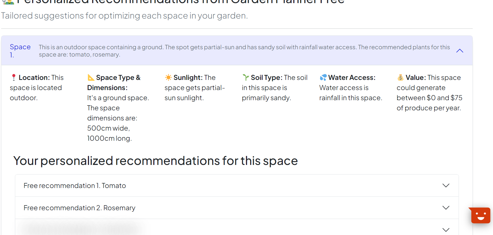
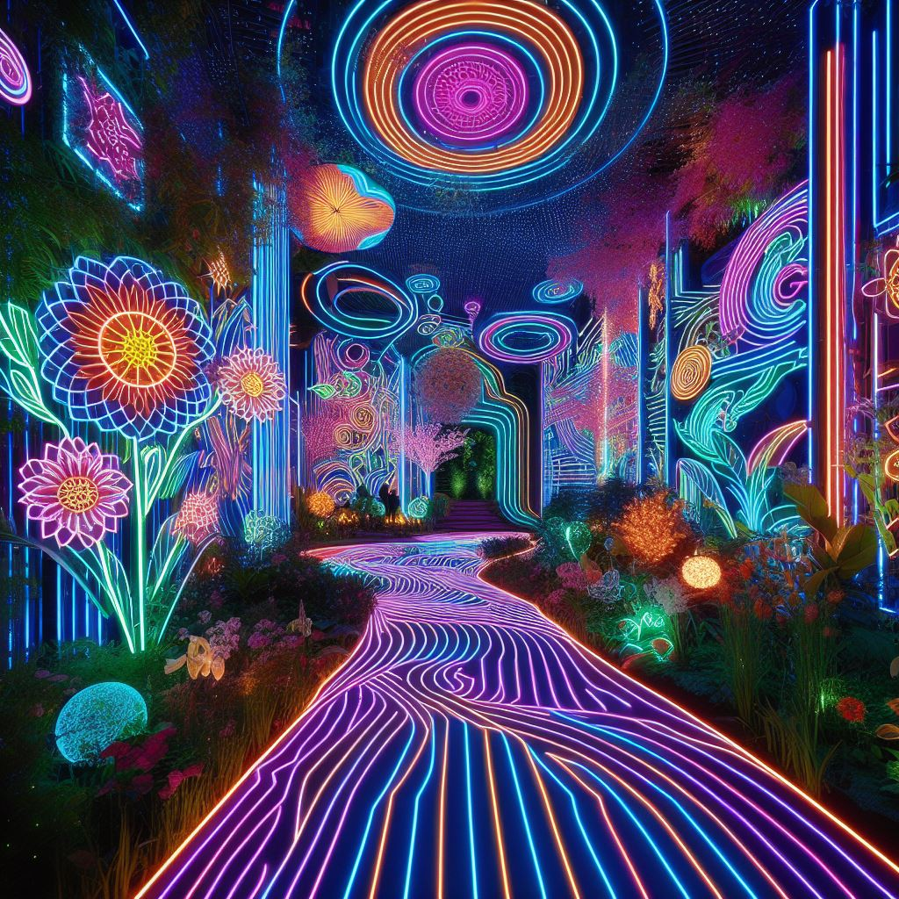

BLOG
Big AI Landscape Design Post
24/10/2023 - prompt “Piet Oudolf futuristic neon renaissance Tuscan garden”
Since starting this blog, I’ve come across the apparent use of artificial intelligence (AI) in landscape design a couple of times (such as here). I’ve been wanting to play around with AI for a while myself and finally got round to it.* In this post, I’ll do some tests to figure out potential uses and limitations of this technology for my own work.
Tip: just click any of the links in the table of contents below to move directly to a specific section - sorry this will be a long(ish) post.
Obviously, AI is a fast-moving field and in a year this post will probably come across as very dated, but that comes with the territory. Also, note I only used free versions of everything, so my findings are not fully representative of all options available and I could only test until my credits ran out. Midjourney did not have a free version so I paid $10 for a one-month subscription.
In this post:
Test case and questions
As a test case, I thought it would be fun to use a picture from our own backyard (my rough estimation is that it's about 50m2, not huge but we are still over the moon with it). Anyway, here’s a photo which I’ll be using as a starting point. And, yes, I probably should mow the lawn.

For each of the tools, two questions I’ll try to address are:
- Is it easy to use?
- What is the quality of the results?
- Is it worth it?
The landscape of AI tools
Excuse the pun, but this is the landscape of AI image generators I’ll be exploring: Dreamstudio (using Stable Diffusion), Midjourney and Fotor. I also found some specific garden and landscape design AI-tools which I’ll check out: Neighborbrite, Dreamzar and AIGardenPlanner.
Towards the future, I’ll keep tabs (or keep a tab open) on new tools in this space, and might follow this post up with a new one as things develop. There are also existing tools which I didn’t have the time or skills yet to review (such as Veras and D5 which both look neat and more suited for professional designers).
This is not the first overview post about this topic (e.g. see this good article from Landezine), but I thought it would be fun to document my own experience with AI rather than just write another one of those.
AI image generators
Dreamstudio
Based on SDXLv1.0 (the latest Stable Diffusion image generation model), Dreamstudio was another image generator which was super easy to use. The quality of the results was consistently higher than Fotor (see below). Dreamstudio worked best when image strength of the original image was decreased, however some examples took it a bit too far, adding a whole English cottage or pool building in the background! I probably should have added some punctuation in the prompts. I ran out of credits before I could improve my prompts. In terms of pricing, $10 buys 1000 credits, which generates an average of 5000 images - that seems like a pretty good deal to me! I might come back later and give Dreamstudio another try.
Midjourney
One of the behemoths of the AI image generation space, of course I had to check out Midjourney. But why did I spend $10 here but not on the rest? There is no free option but luckily the results were not disappointing. Midjourney was hands-down the best of the three AI image generators I tested in terms of final image quality. However, again probably due to prompting user error on my side, the results were pretty “out there”. And not necessarily useful, e.g. Midjourney shifted perspective of the initial image and added large mushrooms in some results. Ease of use was alright, especially for someone already familiar with Discord, a communication app (I use it for gaming voice chat occasionally). I have some generations left ($10 buys approximately 200 generations), it is not the cheapest but costs per generation decrease for the more advanced plans. I think I could probably justify getting a plan just to help with my studies, and once I am a professional even more so.
Fotor
As DALL-E wasn’t available for free and Bing Image Generator did not allow me to upload an existing image, I looked further and stumbled across Fotor. Ease of use was a big plus, but the results are so-so. Nonetheless, it just shows one doesn’t really need a specific AI garden tool to make basic renderings. Pricing seemed a bit high to me compared to others. For example, the cheapest option (in absolute terms) is buying 200 credits on a monthly subscription, which costs €10.99/mo. I’m not sure what the rate per rendering is, but I think I would run out of credits quite quickly. The results don’t justify the price in my opinion.
AI garden design tools
Moving on to some more specific tools for garden design which leverage the power of AI, I’ll take a look at Neighborbrite, DreamzAR and AIR Garden Planner. Do these have added value?
Neighborbrite
Neighborbrite (previously called Yard Vision, I think) is fun and easy to use. The basic version is free, but for a $9.99 fee one of its plant experts will even generate a list of plants from the chosen photo, taking into account plant hardiness zones, sunlight hours, and native species for your area. The image results can be a little messy, particularly regarding the outline of paths and border areas, and the options are limited to eight styles (including a Halloween theme). The main value here is that the process is as simple as uploading an image, highlighting areas to be changed (other than walls) and downloading the results. There is no app but it works from my phone too.
DreamzAR Landscape Design App
DreamsAR is only available as an app, whereas Neighborbrite (above) does not have an app and arguably does not need one. The sole (one-star) review of DreamzAR on the App Store is not very promising. But in the interest of science I gave it a try. Alas, on my first two tries the app did not open and I was tempted to move on. A shame, because having used Augmented Reality (AR) by IKEA myself a couple of times, I would have been interested to try an app applying that technology to our garden. But, third time lucky, it opened! I did not subscribe (€17,99/month) so did not have access to the multitude of features offered (more design tools and elements, cost estimates etc.).
I was a bit lost in the app. At first, I was just moving two or three elements like grass and rock around for a while. The outcome looked like a poor attempt at photoshop, and I’ll spare you a photo of the result. I found the AI function (indicated with a wand icon), editing the mask (what should the result include) just made it worse. The “bare” AI function worked best, but still gave a pretty wacky result (or, as my girlfriend said hesitantly, “okay, well, it’s different”). Part of this is probably user error, but to me it just goes to show that Neighborbrite’s simpler setup yields better results for me. After further testing I could probably give DreamzAR some more credit. One problem: I’ve expended all of my free credits so no further DreamzAR renderings for me just yet.
AI Garden Planner
Next up: AI Garden Planner. It starts with what I think is intended as a kind of solver: indicate which country, plant hardiness zone (we’re apparently in zone 8a), measurement system and gardening experience (I selected ‘Advanced’). After that the website asks for goals and preferences, like food, medicinal, money (?), types of plant and a choice between an ‘organic’ or ‘conventional’ gardening style. So far so good, I made my choices. However, there are yet more choices to be made, now regarding budget, time and maintenance and some other stuff which I won’t bore you with. I’ve reached the end of the questions, skipped the $4.99 option to “Create a Professional Garden Plan”, surely the result must be great and ready to construct. But now what - no photo to upload? How will it know what to plan and where to put each plant and element?
Not to worry - almost instantaneously I received an email stating that my plan was ready (link to my plan here). As you will see, it includes the preferences I indicated. But other than that, it seems almost useless… I already know I can grow rosemary and tomatoes, but does that really need a plan? As with DreamzAR, I’m probably missing out on the real deal by being cheap and not paying for the pro plan. But even as a freebie, the features offered are not convincing. I’m also tempted to deduct points for ease of use because of the many boxes to tick before seeing a result. And the result which is “generated” just left me with a lot of questions.
More playing around
Time to play around with Dreamstudio and Midjourney some more.
Closing thoughts
Wrapping up: Midjourney and Neighborbrite come up on top in my experience, with Dreamstudio a close second. I will probably continue using Midjourney for my studies.
Although I had fun playing around with AI, I have some concerns about the use of AI specific to landscape architecture and garden design. These concerns relate to model collapse, uniformity and lack of explicability.
Firstly, there’s the general risk of a thing called model collapse - the AI trains on AI-generated data and could degenerate. This decline has been compared to photocopying a photocopy, resulting in unwanted artifacts. Information manipulation and amplification of bias (e.g. against marginalised populations) are similar risks to the further development and use of AI tools. Landscape and garden designers must take heed, both to correct relatively innocent rendering errors (e.g. wonky shadows), but also to be careful with data input and output more generally (Albert Speer inspired garden, anyone?).
Secondly, once more designers use AI, the AI will trend towards uniformity. If insufficient non-AI generated designs are used to train the model, it will only continually “recycle” the same designs. There is already a non-AI generated equivalent of this: the prolific use of herringbone wood floors, which has become a bit of a trope in Dutch upmarket interior design. I suppose the trend towards uniformity could be ameliorated if many designers use lots of different prompts (e.g. “design a Piet Oudolf futuristic neon renaissance Tuscan garden” - result below). But the AI model would still be using the same images for training as it started out with. I feel there is a need for fresh ideas, new designs, high ambitions, similar to how AI companies are hiring poets.
Not Piet Oudolf: created with Bing image generator using DALL-E 3
Thirdly, and most specifically, lack of explicability is a concern for me in using AI. I’m obviously not the first person to have this view, but in my view all design is a statement. And designing means defending (or rather, explaining) that statement. In some cases like designing a toaster, design can be subtle or “speak for itself”. With landscape architecture and garden design, that is less evident: the role of the designer is not just that of designing for a certain aesthetic preference or a specific use case, but also factoring in elements such as geology, soil type, sun hours, water, historical context, climate change (the list goes on). Ultimately, that is a very long list a designer learns to take into account and a lot of prompts for AI to handle (assuming that it could successfully handle them).
In practice, to me the list of elements to be factored in for a good design means that AI design tools are really only helpful either in the very early, prototyping phase or towards the end of a design process, where the elements just mentioned have already been taken into account by the (human) designer. Fortunately, there are also AI tools for the intermediate steps in the design process, e.g. related to mapping and site analysis. Going forward, I will probably just use Midjourney or Stable Diffusion for rendering and synthesize it with my own human knowledge for soil type, sun hours, water - no need for AI garden tools to do that part.
AI garden tools are getting quite clever though, factoring in aspects such as soil type and sun hours, but obviously this still currently needs a check by someone actually standing on that soil and observing those sun hours in the specific surrounding. Nevertheless, I expect that in the future, as models improve, it won’t be hard to conceive of a successful, flourishing landscape or garden purely designed by AI and constructed by humans. The earlier we learn to work with it rather than resist it, the better.
The next impressive rendering you will come across may have been generated using an AI tool. I’ve tried to demonstrate above that it is not that hard to use these tools as an amateur with basic computer skills. Now it's your turn to check out what landscape and garden designs you and the AI can create!
*A big thank you to Edwin for inspiring me to do this post and explaining some of the more technical aspects of AI to me. Any errors in the post above are solely attributable to my lack of understanding/the fact that I was slightly tipsy and ready to hit the sack when Edwin was explaining AI to me on a train back from Utrecht.